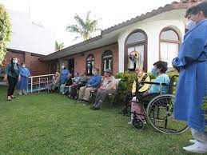
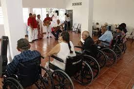
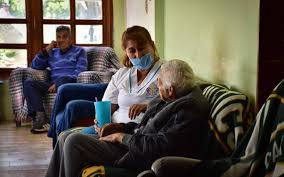
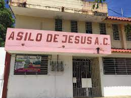
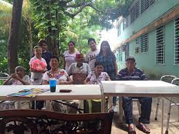
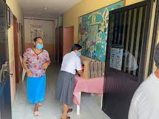
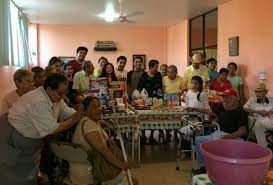

Nuestro proposito

1Nuestra ayuda
El ayudar a gente mayor
2Tipo de ayuda
Gran parte de la población adulta mayor, necesita o necesitará alguna forma de asistencia a largo plazo, ya sea en casa, en un asilo o en estadías prolongadas en hospitales debido a enfermedades degenerativas, deterioro físico, fragilidad, entre otros, que dificultan el desarrollo de actividades de la vida diaria de manera independiente.
Ideas


Nuestra Ayuda

Ayuda

Nuestra Ayuda

Ayuda



Ayuda

Ayuda

Ayuda
Que opinan
Adultos
El ayudar a los ancianos es bastante bueno
Jovenes
Apoyar por gratitud y honestidad siempre sera lo mejor
Nuestras ayudas
Menores
Menores apoyando con donaciones o ayudas voluntarias
Donando
Apoya con tu granito de arena
Visitando distintos centros de ayuda
Hay muchos acilos dentro de la ciudad de minatilan